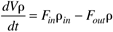

| [ Team LiB ] |
|
M8.2 Simplified Modeling EquationsHere we make the following assumptions
In addition, to develop a simplified model, we assume that the jacket temperature can be directly (and nearly instantaneously) manipulated. This assumption is very good if a boiling heat transfer fluid is used, for example; changing the pressure on the jacket side would result in near instantaneous change in jacket temperature (note that a recirculating jacket system would not be used in this scenario). Even for the recirculating heat transfer system, the assumption of the jacket temperature being directly manipulated can be good if the jacket dynamics are rapid compared to the reactor dynamics. Overall Reactor Material BalanceThe reactor overall material balance equation is  where V is the constant liquid reactor volume, r is the density of reactor fluid and rin is the density of the inlet stream. Fin and Fout are the flow rates of the inlet and outlet streams. Assuming a constant density (rin = r) and volume, it is easy to show that Fout = Fin = F; this will be used in the component balance. Balance on Component AHere we consider, for simplicity, the simple reaction A where CA is the concentration of component A in the reactor and rA is the rate of reaction per unit volume. The Arrhenius expression is normally used for the rate of reaction. A first-order reaction results in the following where k0 is the frequency factor, Ea is the activation energy, R is the ideal gas constant, and T is the reactor temperature on an absolute scale (R, Rankine or K, Kelvin). Reactor Energy BalanceThe reactor energy balance, assuming constant volume, heat capacity (cp) and density (r), and neglecting changes in the kinetic and potential energy is where -DH is the heat of reaction, U is the heat transfer coefficient, A is the heat transfer area, Tf is the feed temperature, and Tj is the jacket temperature. State Variable Form of the EquationsWe can write Equations (M8.1-M8.3) in the standard state variable form Steady-State SolutionThe steady-state solution is obtained when the two state derivatives are set equal to zero
Here, all of the inputs and parameters must be specified, allowing the two equations to be solved for steady-state values of the two states. For these equations, a nonlinear technique, such as Newton Raphson, would need to be used. It should be noted, however, that there is an easier selection of the two unknowns to solve for. For a given steady-state temperature, solve Equation (M8.5a) for the steady-state concentration. Then, solve Equation (M8.5b) for the value of the jacket temperature (perform this in the following exercise). Problem M8.1 Steady-State Concentration and Jacket Temperature for a Specified Reactor Temperature
Alternatively, one could specify the desired concentration, solve for the required reactor temperature (from M8.5a), and then solve for the required jacket temperature (from M8.5b). Again, this assumes that the residence time and all other parameters are fixed. LinearizationThe goal of the linearization procedure is to find a model with the form Here we define the states, output, and inputs in deviation variable form Notice that the first input (jacket temperature, Tj) is manipulated, while the last three inputs are disturbances. The Jacobian matrix is where ks = k0 exp(–Ea/RTs) and The first column (related to the manipulated input, Tj) of the B matrix is The output matrix is, since we consider temperature (second state) to be measured, Also, the input is not measured, so D = 0. |
| [ Team LiB ] |
|